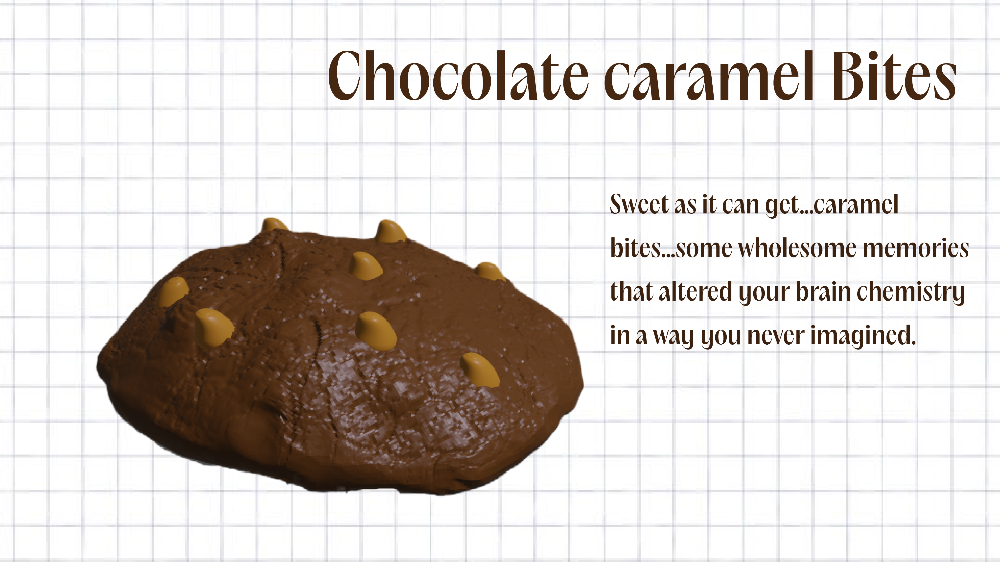
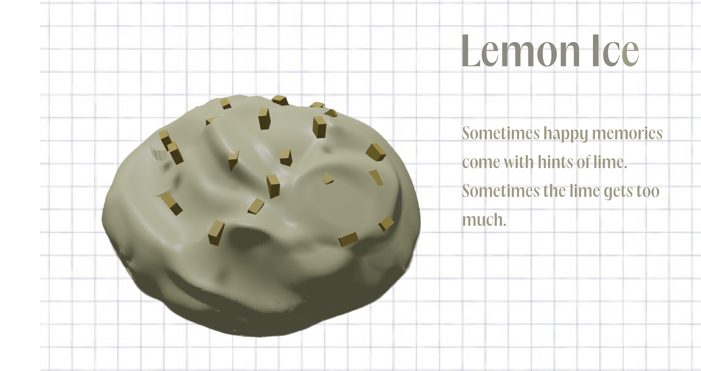
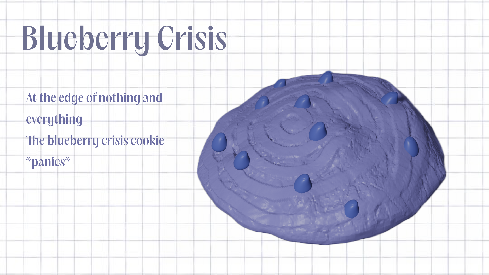
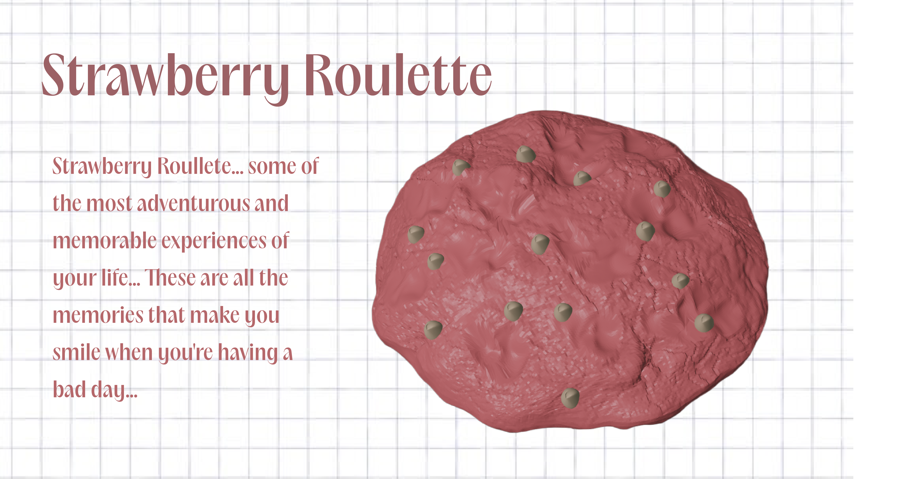
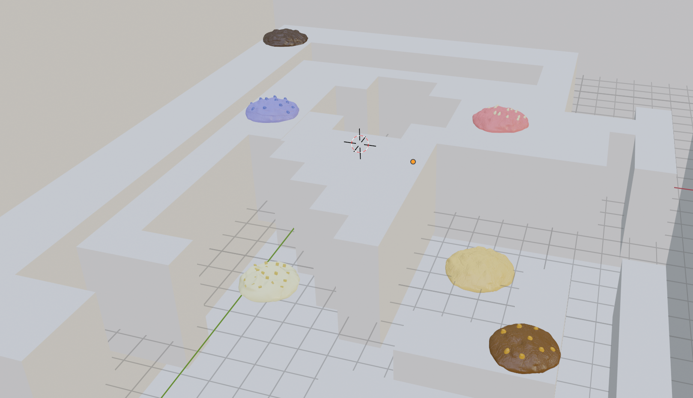
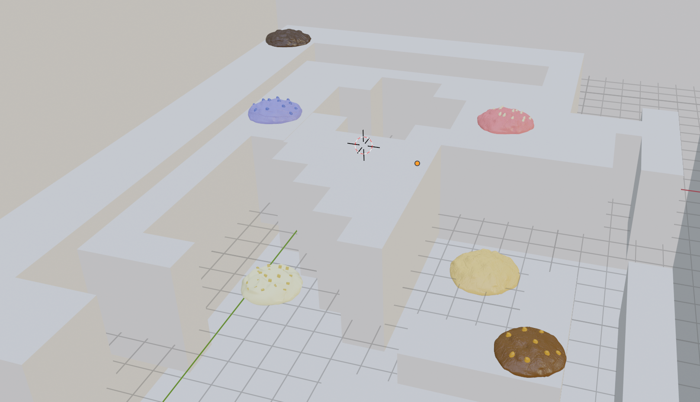

Warped memories of digital ghosts
This project welcomes you to a world in which people go to a data store to access their digital memories in the form of differently flavoured cookies.
Unity | Blender | 2023
Welcome to the data store
Your imagination keeping you awake
in the middle of the night
Is it fantasy or is it just blatant lies
Does imagination ever turn into reality
Is there some truth always hidden in fantasy?
Do you ever feel like you’re floating away from real life?
Does it feel dreamy or scary at times ?




 
